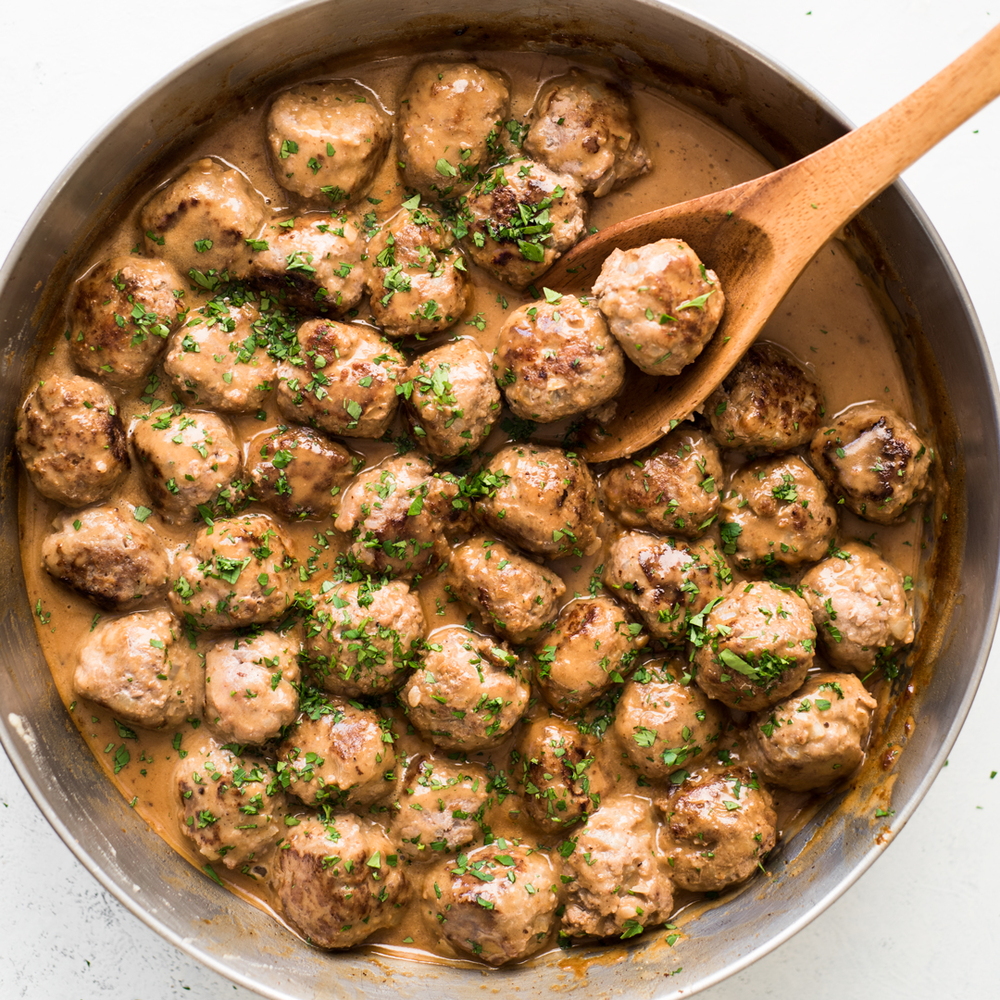

Swedish Meatballs

Swedish Meatballs
This recipe will show you how to make the perfect Swedish Meatballs.
Ingredients for Meatballs:
- Ground beef
- Panko bread crumbs
- Parsley
- Ground allspice
- Ground nutmeg
- Onion
- Garlic Powder
- Pepper
- Salt
- Egg
- Olive oil
- Butter
Ingredients for the Sauce:
- Butter
- Flour
- Beef broth
- Heavy cream
- Worcestershire sauce
- Dijon Mustard
- Salt and pepper
Steps:
This recipes only takes about 30 minutes to make, super fast and easy!
- Combine beef, egg and seasonings: In a medium sized bowl combine ground beef, panko, parsley, allspice, nutmeg, onion, garlic powder, pepper, salt and egg.
Mix until combined.
- Roll and cook: Roll into 12 large meatballs or 20 small meatballs. In a large skillet heat olive oil and 1 Tablespoon butter.
Add the meatballs and cook turning continuously until brown on each side and cooked throughout. Transfer to a plate and cover with foil.
- Make the sauce: Add 4 Tablespoons butter and flour to skillet and whisk until it turns brown. Slowly stir in beef broth and heavy cream.
Add worchestershire sauce and dijon mustard and bring to a simmer until sauce starts to thicken. Salt and pepper to taste.
- Add meatballs and simmer: Add the meatballs back to the skillet and simmer for another 1-2 minutes. Serve over egg noodles or rice.
Home